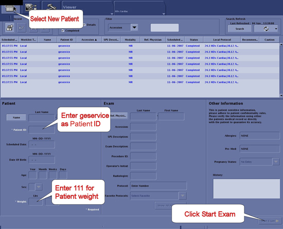
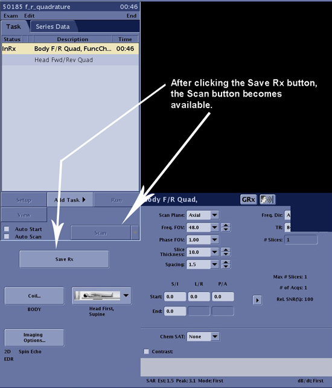
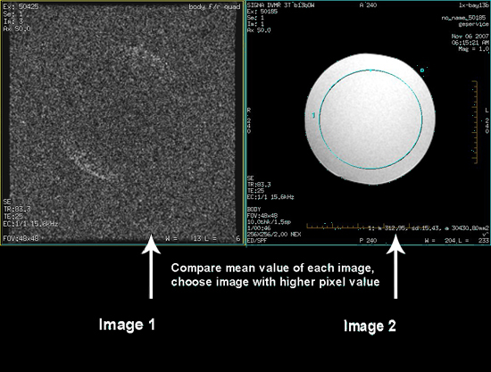

Operating Documentation
Direction 5500113, Rev# 3
Discovery MR750 3.0T Service Methods
Module Version 6.0, Version Date 4/22/09
Operating Documentation |
| Required Persons | Preliminary Reqs | Procedure | Finalization |
|---|---|---|---|
| 1 | Not Applicable | 30 minutes | Not Applicable |
This section determines the quadrature balance of the quad coil and the phase splitter network. In this test, the Body TLT Sphere phantom is scanned with the quadrature coil using two different methods. First, an image is taken with the quadrature coil as presently connected. Next, the cables to the quadrature switches are reversed, and the phantom is scanned a second time using the same protocol. The resultant images are analyzed to verify proper quadrature drive function and cable configuration. This procedure consists of the following:
Body Forward/Reverse Quadrature Scans.
Forward/Reverse Quadrature Test Image Analysis.
| Item | Qty | Effectivity | Part# | Manufacturer | |
|---|---|---|---|---|---|
| 3.0T Body Loader and Phantom | 1 | 3.0T | 2371511 | - | |
| 1.5T Body Loader and Phantom | 1 | 1.5T | 2248363 | - | |
| ||||
| poison hazard! | ||||
| 3.0t phantom contains silicon oils. | ||||
| do not ingest. dispose of as a hazardous waste according to state and federal regulations. |
To prepare the system for scan, set the following parameters:
Click [New Pt] and then specify these settings:
Illustration 1: Scan I/O Page

ID: geservice[Enter]
Name: body f/r quad[Enter]
Weight (lb): 111[Enter]
Set patient protocols to Service.
Illustration 2: Protocol Selector

In the Patient Protocols section, click [Service] and then click [Other].
Locate Protocol F and R quadrature, click the protocol name, and then click the arrow in between to add it to the Multi Protocol List or remove it.
Click Accept to download the series.
At the scanner, remove any surface or head coil from the bore.
Place the Body TLT Sphere Phantom in the SPT Body Loader and place the Body Loader/TLT Phantom in the center of the cradle.
Landmark on the center of the sphere. On the front of the magnet enclosure, press [LANDMARK] on the keypad, and then press [ADV TO SCAN].
Start exam then select [Save Rx]. Complete the scan by selecting the [Scan] option.
Select Manual Prescan from the drop-down list next to the Scan button.
Set TG=100; confirm R1=13, R2=28.
Illustration 3: Saving Scan Parameters

Reverse the black I and Q cables connecting to J2 and J3 at the hybrid splitter from the body coil.
| NOTE: | The hybrid splitter can be found at the left front side of the magnet. |
Without changing the prescan settings, rescan the phantom using the same scan protocol.
Wait until analysis is completed before restoring the system to the original configuration (i.e., return J2 and J3 to their original connection).
This analysis procedure applies only to body scans.
Display each image so you can compare mean values.
Use a square Region of Interest (ROI) of 4000 mm2 ± 50 mm2, located at the center of the image. Measure the mean pixel value (MPV1). In the viewer, this is shown as m=xxx. Jot down this value. See Illustration 4.
| MPV1: | ______________ | MPV2: | ______________ |
Illustration 4: Image Comparison

Restore the system to patient scanning condition.
Do a test scan to ensure the system is running properly.